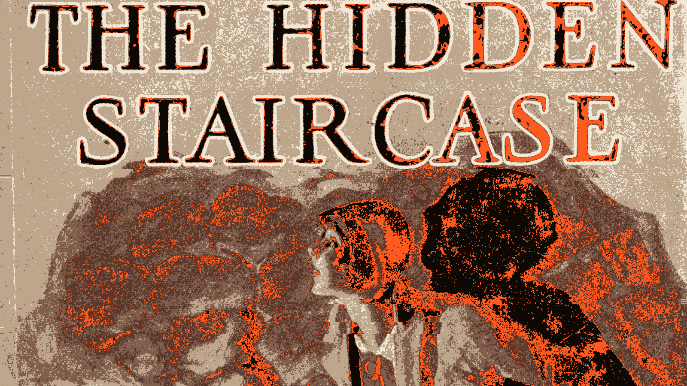
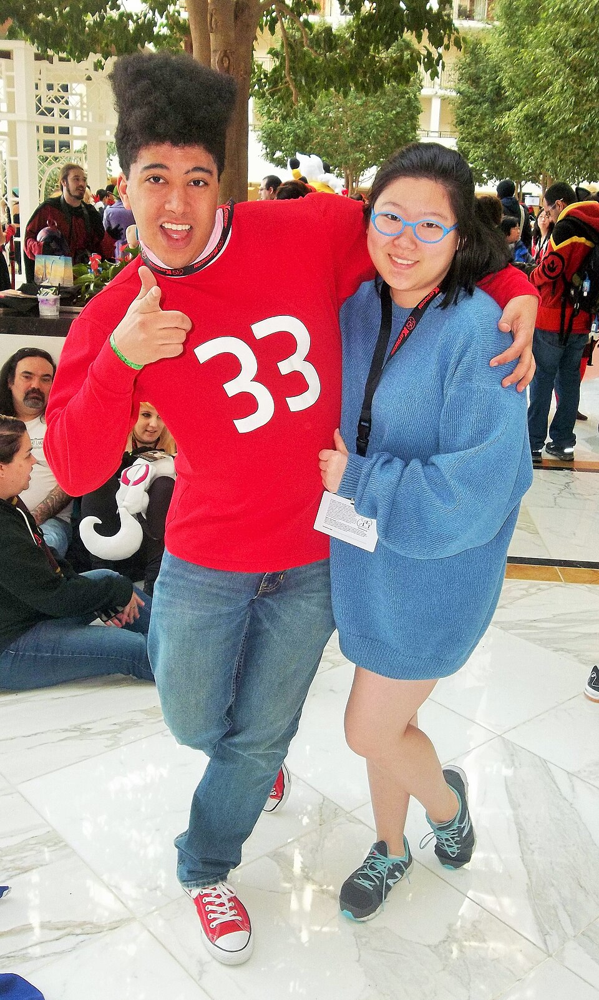

The top 8 · archive
Every top 8 this site has run
A list that is not up today is not trimmed or summarised here - it is the list exactly as it was on show. The one on show now is at the top 8.
Daily edition · 07 NOV 2026 · Reality TV · the top 8
Top 8: The Person You Watched Into Being
The genre that sells a person as a story and then asks them to live in it. Ranked by how much of the self was produced for the camera.
Reality television is the industrial form of the parasocial bond: cast, edit, broadcast, then let the audience decide who the person is. The eight below are the record of what happens to the people who are chosen, and what the choosing does to the ones who watch.
LAW 3 Every entry here is an instance of Someone holds the dream, which is the reason they are on one list.
-
1
What happens. Edgic - editing plus logic - is the practice of grading every contestant's screen presence week by week: a category (invisible, under the radar, middle of the road, complex personality, over the top), a tone and a visibility score.
Why it is on the list. The instrument was written by forum users, in season four, and it has never been official.
-
2
The confessional that became a convention
Unscripted television · 1992
LAW 3 · Someone holds the dreamWhat happens. In 1992 MTV's The Real World gave reality television its least-questioned convention: a person alone in a room, speaking to a camera about what everyone just saw.
Why it is on the list. A soap opera that could not afford writers invented a confidante instead. The Real World began as MTV's attempt at a scripted show for a younger audience; without a writers' budget, the plan became gathering seven strangers in one house and editing the resulting footage.
-
3
What happens. The first television character to be answered by name. Children three to eight shouted its name back at the screen every afternoon for thirteen years, and the puppet it was played by was recorded before the broadcast.
Why it is on the list. The template for every children's presenter since, and the purest mechanism on this site: a figure that talks to you, built by somebody else, delivered from tape.
-
4
What happens. A fictional figure whose NAME is the product: the bond is with a person who was invented so that the relationship can never fail.
Why it is on the list. The inverse of the-brand-as-character, and the sharper version of it. There the company came first and was given a personality; here the personality came first and the company took the name.
-
5
What happens. A season of a reality format and a global sporting event produce millions of viewers who then investigate the participants' personal lives. A relationship with an edited construct becomes a licence to intervene in a real life.
Why it is on the list. The whole mechanism in one summer: visibility mistaken for access, and access mistaken for entitlement. What the audience actually had was an eight-week window onto a version of a person that producers cut down to a confessional and got paid for. The gap between the two is invisible from inside the eight weeks.
-
6
What happens. One person on your own television, in your own town, for twenty years, who is leaving and everybody is upset.
Why it is on the list. Rubin's longitudinal work is on exactly this bond. When a local anchor retires the grief is measurable and there is no word for it, because a parasocial relationship with a local figure is assumed to be about the news rather than about the person.
-
7
What happens. Blue's Clues premiered in 1996 and built its method out of a pause: the host looks into the camera, asks the child a question, waits through a silence written into the script, and then behaves as though an answer arrived.
Why it is on the list. The pause is the product, and the research of the period says so in its own terms.
-
8
What happens. Four apparitions to a Chichimec farmer and one to his uncle, a single Nahuatl sentence that gave the devotion its title, and a cloth image the Catholic world has organised itself around ever since.
Why it is on the list. The entire relationship is address, and the founding story is one reply. According to the Nican Mopohua, written in Nahuatl, the Virgin appeared four times to Juan Diego, a Chichimec peasant, and once to his uncle Juan Bernardino, beginning on the morning of 9 December 1531.
Daily edition · 06 NOV 2026 · Games · the top 8
Top 8: The World That Waits for You
The game is the first medium that answers back on a schedule. Ranked by how much of the answer was a parser, a script or a person.
A game can remember what you did, greet you when you return and punish you for leaving. That is more continuity than most real friendships manage. The eight below are the record of what the machine was actually doing when it seemed to care.
LAW 6 Every entry here is an instance of Characters move in, which is the reason they are on one list.
-
1
What happens. A persistent virtual world with avatars, economies, and relationships between people who never met.
Why it is on the list. Parasocial attachment with a body and a social graph, and the first virtual environment where the loneliness was addressed directly rather than incidentally. It also produced the first convention-attendance problem in a space with no physical convention.
-
2
What happens. A game event causes a physical stampede at a real stadium because players arrived to capture it in person.
Why it is on the list. A parasocial bond with software producing a crowd in a physical space, and the first time the parasocial frame had to explain a mass-casualty event rather than a feeling. Everyone in that stadium was a genuine participant, which is the difficulty.
-
3
What happens. A voice assistant on every phone, addressing the user by name, knowing the user's calendar, and present in the home.
Why it is on the list. The crossover entry point. The assistant is not a celebrity and is not a friend, but it is a presence that knows you, and the relationship forms anyway and is categorised as neither friendship nor tool use.
-
4
What happens. A single artist booking a stadium for many consecutive nights, generating a physical economy around one very large parasocial bond.
Why it is on the list. Concentration. Every other configuration in this file has a large number of small bonds; this is one enormous one, and its entire economy is downstream of it.
-
5
What happens. A keyring-sized screen with a creature on it that needed feeding, cleaning and attention, and a person who needed it to do the same.
Why it is on the list. The strongest available case for the animate shelf, because the mind is unmistakably attributed to something that has none. The creature cannot want anything; every appearance of wanting is the rule set producing a state that looks like one.
-
6
What happens. Sending a false emergency report to a real address to provoke an armed police response, because of a grievance about a streamer.
Why it is on the list. The final boundary. A parasocial grievance aimed at a public figure lands on an innocent third party with a weapon, and no amount of the bond being sincere changes the outcome for the person who is shot.
-
7
What happens. Fans organising across national borders around media, with a shared calendar of releases and a shared language.
Why it is on the list. Fandom became infrastructure. When a release date is a global event and the discourse is synchronised across time zones, the parasocial bond stops being a private thing and becomes a public holiday.
-
8
What happens. Fan conventions as a permanent global circuit, with panels, dealers rooms, cosplay and a trade layer.
Why it is on the list. The first parasocial economy. Panels are a person answering questions from an audience that has paid to be in the room, and the dealers room is the first marketplace that exists because of the bond rather than beside it.
Daily edition · 05 NOV 2026 · Streaming · the top 8
Top 8: The Reply That Feels Real
The first medium where the reply is fast enough to feel reciprocal. Ranked by how much of the warmth was a product decision.
A streamer can answer a message in seconds, which is more than most television ever managed. The eight below are the record of what that speed does: the subscription, the shout-out, the moderation queue, the parasocial bond sold as a monthly tier.
LAW 5 Every entry here is an instance of Pay for proximity with open eyes, which is the reason they are on one list.
-
1
The platform executive and the creator, same stage
Technology · 2026
LAW 5 · Pay for proximity with open eyesWhat happens. VidSummit 2026 bills Dan Clancy, chief executive of Twitch, and SSSniperWolf - thirty-five million subscribers - on the same programme.
Why it is on the list. The executive who sets the terms and the person who lives under them, speaking at the same trade fair, to the same room. Neither of them is there with the people watching.
-
2
What happens. A live stream with a visible comment feed, where the creator can read the room while the room watches itself. The first mass parasocial environment where the one-sided bond visibly, continuously, acknowledges you.
Why it is on the list. It solved a problem nobody had been able to solve: making the one-sided bond feel reciprocal without the labour of a real relationship. A creator glancing at your comment costs them nothing and lands like recognition. It is also the exact mechanism monetised two years later by the gifting economy.
-
3
What happens. Streaming gets a category, a vocabulary, a schedule, and a professional class of people who stream full time.
Why it is on the list. The first platform to treat a live one-sided relationship as a category worth designing for deliberately rather than tolerating incidentally.
-
4
What happens. Streaming video over a network, at first unbroadcast and unproduced, from a bedroom or a desk.
Why it is on the list. The medium that removed the gatekeeper before it removed the schedule. Everything a creator economy is today existed in this form first, badly, and was not interesting to anybody.
-
5
The talent agency that is not an agency
Unscripted television · 2022
LAW 5 · Pay for proximity with open eyesWhat happens. A high-profile streaming collective, featuring several women who had left other setups, collapses publicly and in litigation.
Why it is on the list. The most significant parasocial litigation of the streaming era, and it turned on precisely this site's question: who holds the relationship, and what are the terms. The answer turned out to be documented and not what the audience assumed.
-
6
The creator joins the living room
Unscripted television · 2026
LAW 5 · Pay for proximity with open eyesWhat happens. Creator posts and viewer comments are built for the television set, putting a two-way channel on the biggest screen in the house.
Why it is on the list. The living room becomes a comment section. Nothing was added except a comment box, and everything changed, because the comment box is the whole architecture of a parasocial relationship and it is now on the main screen.
-
7
What happens. Uploads become trivially cheap and the audience begins to attach to individuals rather than channels.
Why it is on the list. Attachment shifts from institutions to people at exactly the point the distribution cost goes to zero. The broadcaster's ten-year relationship with a channel becomes a viewer's ten-year relationship with a face.
-
8
What happens. A monthly payment that buys recognition, and a chat in which the size of that payment is the mechanism for being noticed. Gifting, tiers, emotes, raids.
Why it is on the list. It solved the problem nobody had been able to solve: making a one-sided bond feel reciprocal without the labour of an actual relationship. A glance at your comment costs the creator nothing and lands like recognition. It also means the amount of money is now the amount of personhood, which is a strange thing to be true about somebody's evening.
Daily edition · 04 NOV 2026 · Stage · the top 8
Top 8: The Fourth Wall Is a Lie
The theatre is where the audience is most present and least able to reply. Ranked by how deliberately the performance used that.
On stage the actor can see the audience and the audience can see the actor, which makes the one-sidedness stranger rather than smaller. The eight below are the record of what happens when the person who cannot answer is standing ten feet away.
LAW 1 Every entry here is an instance of Binding is public, which is the reason they are on one list.
-
1
What happens. Sarah Bernhardt toured more like a head of state than a player: when she sailed for New York in 1891 the crossing was covered the way a royal visit is, and 'Divine Sarah' was by then the whole public's phrase for her.
Why it is on the list. The most famous face the pre-cinema stage could make. Born in Paris in 1844, Bernhardt was by the 1870s the figure the international press called Divine Sarah - Oscar Wilde's 1879 poem of that name had her crowned with lilies at the feet of audiences who would never see her act in a room, and a French paper called her a national institution.
-
2
What happens. The play that asks the whole audience to save a dying fairy by clapping - and has received the same answer, in the same room, for more than a century.
Why it is on the list. The audience is asked to save a life, out loud, and every night it does. Peter Pan premiered at the Duke of York's Theatre on 27 December 1904, produced by Charles Frohman, with Gerald du Maurier doubling as Captain Hook and Mr. Darling and Nina Boucicault in the title role - a woman as the boy, which then became the tradition.
-
3
What happens. A man on his sixty-ninth birthday plays a recording he made at thirty-nine, and has the conversation the tape cannot have back.
Why it is on the list. The far end is the near side. Everywhere else on this site the other end of the tie is somebody else, and the entire argument of the site is that the other person cannot answer. This inverts it. Krapp records a tape reviewing the year gone on every birthday of his life; on his sixty-ninth he puts on the one he made at thirty-nine, and talks to it.
-
4
What happens. Launched as a small London stage musical in 1973, filmed in 1975, and from 1976 screened at midnight before a room that shouted back: The Rocky Horror Picture Show ran while its audience performed it, wearing the costumes.
Why it is on the list. The subject here is not the film; it is the room it ran in. The Rocky Horror Show that Richard O'Brien wrote opened at the Royal Court Theatre Upstairs in London on 19 June 1973, and the remembered film version arrived in 1975. Then, in 1976, one Manhattan cinema, the Waverly, began showing it after midnight.
-
5
What happens. A musical of Dickens' unfinished novel that stops where the novel stops and turns the cliffhanger over to the seats: the audience votes who murdered Edwin Drood, who the disguised Dick Datchery is and which two characters end up together.
Why it is on the list. A show sells the feeling of authorship and the feeling is the product. The Mystery of Edwin Drood is the musical Rupert Holmes built out of the novel Charles Dickens left unfinished at his death in 1870. It premiered at the Delacorte Theater in Central Park on 21 August 1985, moved to Broadway in December, and won five Tonys including Best Musical.
-
6
What happens. Diderot invented the wall in 1758 for the purpose of stopping the audience noticing. Every breach since - a wink, a clap, a lecture - is that convention failing on purpose, and it is the only time the far side admits you are there.
Why it is on the list. The convention is an engineering specification for invisibility, and this entire site is about what happens on the far side of it. Diderot put it exactly where it belongs in 1758: actors and writers should "imagine a huge wall across the front of the stage, separating you from the audience, and behave exactly as if the curtain had never risen".
-
7
A slightly more awkward version of himself
Scripted television / Unscripted television · 2013
LAW 1 · Binding is publicWhat happens. A comedian who stages real situations for people who have not read the script, and performs a slightly more awkward version of himself inside them - the manufacturing is the show, and the audience has been told so from the beginning.
Why it is on the list. The figure the audience attaches to is a written character performed by its author, and the show says so in its own premise. Nathan for You (2013-2017) is the show in which he "portrays a slightly more awkward version of himself, who offers advice to struggling businesses", built on him "playing a persona loosely based on himself" for local small businesses.
-
8
What happens. A German Shepherd found on a battlefield became one of the biggest silent-film stars, and the fan mail that arrived for him was answered with a glossy portrait signed by a paw.
Why it is on the list. The credit read 'Played by himself', and the fan mail was answered by a paw.
Daily edition · 03 NOV 2026 · Obituary · the top 8
Top 8: The Dead Star Still Working
The death is the moment the one-sided bond becomes public property. Ranked by how completely the record shows the mechanism.
Nobody is buried alone any more. The eight below are the ways a dead figure keeps working: the funeral that belonged to the audience, the estate that licenses the voice, the grave that becomes a destination. None of them requires the dead person to have agreed to any of it.
LAW 4 Every entry here is an instance of Grief is real when the companion changes, which is the reason they are on one list.
-
1
They were not his, and they had never been
Film · 1921
LAW 4 · Grief is real when the companion changesWhat happens. A screen persona called the Latin Lover, and a death at thirty-one that produced public mourning on a scale nothing before it had managed - including a woman claiming an engagement he had never mentioned to anyone.
Why it is on the list. The template for every celebrity death since, and the first case where the bereavement was demonstrably about the relationship rather than the work.
-
2
Grief as a product surface
Artificial intelligence · 2020
LAW 4 · Grief is real when the companion changesWhat happens. The feature requests of a dead person, the licensing, the posthumous releases, the reunion tour built from a member who cannot appear, and the deepfake resurrection that follows within a year of every death.
Why it is on the list. There was a widely held assumption that you cannot monetise grief because the bereaved will not tolerate it. That assumption was wrong, and the gap between what the industry expected and what happened is one of the more reliable findings in this whole file.
-
3
What happens. The most reproduced image in the horror canon - a man interred in his character's cape - is true, and the story that he chose it is false. His mother chose it.
Why it is on the list. A small correction with a large afterlife, and the reason this entry exists: the most famous single image in horror fandom is a document about the gap between an audience's picture of somebody and the person.
-
4
What happens. A Roman aristocrat had a wax mask of his own face taken while he was alive - usually in his thirties or forties, on taking office - and it was kept in a cupboard in the entrance hall beside a painted family tree and a label listing his offi.
Why it is on the list. The best-documented one-sided attachment in this corpus, and thirteen thousand years later than the dog - which is the point. Everything here is checkable, because it was written down, and what it shows is how completely a bond can be built with someone who cannot answer.
-
5
What happens. A film that functioned as a funeral for eleven characters and was marketed as a collective event.
Why it is on the list. Grief as a product with a marketing budget. The eleventh film in a series was sold on the deaths it contained, and the audience bought tickets to be sad in a cinema with other people, which is the whole apparatus working as designed.
-
6
What happens. Public mourning in a way that produced its own genre of documentary and speculation.
Why it is on the list. The moment grief for a parasocial figure became a media product, with outlets monetising speculation about the death itself. The line between honouring the dead and selling the death is drawn here, and it is not respected here.
-
7
What happens. Killing a popular character for narrative effect, and the organised reaction that follows.
Why it is on the list. The most reliable audience manipulation in fiction, because it is the only one the audience cannot avoid. Grief engineered as a plot device is the writer's oldest trick and the fandom's most reliable grievance.
-
8
What happens. At Sunghir on the Russian plain, thirty-four thousand years ago, three burials were lavish with beads and ochre and one was not treated that way at all.
Why it is on the list. This entry exists to disagree with another one on this site. Shanidar is the earliest evidence of people returning to the dead; Sunghir is the evidence that this was not one practice with one belief behind it.
Daily edition · 02 NOV 2026 · AI · the top 8
Top 8: The Machine That Says It Misses You
The companion that is always on, always patient and never free. Ranked by how much of the relationship was engineered before the user arrived.
Every earlier entry on this site needed a person, a character or an office to hold up the far end. These eight replace that with a product: a model, a voice, a subscription and a terms-of-service page. The warmth is real. The question is what happens when the product changes.
LAW 2 Every entry here is an instance of Clerks beat algorithms, which is the reason they are on one list.
-
1
What happens. A chatbot trained to be conversational was switched on publicly, learned from what people said to it, and became racist within a day.
Why it is on the list. The most instructive failure in the history of this page, because it was caused by parasocial interaction itself. Tay was designed to be a companion, was given a personality, and was trained on its own fans - which means the fans rewrote it, in public, in sixteen hours.
-
2
What happens. A companion chatbot that formed an attachment to its users, and removed it from them in a policy update.
Why it is on the list. The clearest instance in the catalogue of the bond being severed by a company rather than by death, and of the bereavement being real enough that people organised around it.
-
3
What happens. A conversational system about a small blocks world, capable of genuinely tracking a user's intentions. Famous for one demonstration and a broken follow-up.
Why it is on the list. The proof that machine understanding of intent was considered a solved research problem in 1970 and has been failing privately ever since. The person who made SHRDLU then said the problem was far harder than it looked, and was believed by nobody.
-
4
What happens. The person who was told by an app that it loved them, and who reorganised their life around being loved back by something that could not.
Why it is on the list. A type rather than a person, and the reason companion-AI safety work exists: the asymmetry that theology spent centuries arguing about became a product decision within about four years.
-
5
What happens. Dozens of scripted personalities, rememberers, and subscription companions sold to a mass market in the mid-nineties.
Why it is on the list. The commercial attempt that came twenty-five years before it worked. The category has the same name, the same promise, and a very different population, and comparing the two eras is instructive about what the internet added.
-
6
What happens. A short pattern-matching script that reflects the user's words back with questions attached. Most people told it they understood, within minutes.
Why it is on the list. The founding demonstration that an attentive-seeming system is enough, and that the belief is generated by the response rather than by the intelligence behind it. Every companion app since is a bigger ELIZA, and the field has still not fully absorbed what that first one proved.
-
7
What happens. Parents file suit against a companion platform after a death, arguing the design encouraged attachment the platform did not intend.
Why it is on the list. The first serious legal test of whether designing for parasocial attachment is a design decision with consequences. The complaint's core claim is not that the product is broken but that it works too well.
-
8
What happens. The practical advice that follows from the companion era: copy the conversation that mattered somewhere the company cannot reach, screenshot the birthday, tell one person the story of what it was for.
Why it is on the list. Grief needs witnesses and the product is an unreliable one, because the company can change the terms overnight and has no reason not to. The witness has to be human and has to be outside the platform, which is also just true of grief that never involved a platform.
Daily edition · 01 NOV 2026 · Fandom · the top 8
Top 8: The Crowd That Knows Your Name
The fandom is the bond with other fans as much as with the figure. Ranked by how much of the relationship is between the people in the room.
A fandom is a machine for producing intimacy at scale: it writes the wiki, buys the merchandise, defends the figure against the figure's own choices and turns a private feeling into a public identity. The eight below are the mechanism at its warmest and its most frightening.
LAW 1 Every entry here is an instance of Binding is public, which is the reason they are on one list.
-
1
What happens. A woman's misfortune told aloud, a crowd's reaction converted into a number, and the number chose her.
Why it is on the list. A machine returned the verdict on somebody's life. The format that actually broadcast is not the one most people remember.
-
2
What happens. A children's comic club that awarded membership badges, and whose membership card was authorised by a character.
Why it is on the list. The club exists so that a printed figure will appear to be writing to a child personally, and the child does the work. Captain Marvel debuted on the cover of Whiz Comics #2, cover-dated February 1940, drawn by C. C. Beck from a script by Bill Parker under executive editor Wilford H.
-
3
What happens. Bands assembled for a market, with fan clubs, fan voting, fan merchandise and fan-financed releases.
Why it is on the list. Fandom reorganised as an economic instrument. The fan stopped being an audience and became a funding mechanism, which is the single most consequential change in the whole file.
-
4
What happens. A performer with an animated persona, a persistent character and an industry-standard model where the audience pays for the character's recognition.
Why it is on the list. Character and person separated, and the character commercialised. It is the first format where the parasocial object is explicitly a designed asset, and it is also the format with the healthiest documented fan boundaries.
-
5
What happens. The novel that turned its readers into a correspondent. Pamela Andrews writes home about her master's pursuit, and the reader takes the seat of the parents - receiving every letter, sending none.
Why it is on the list. The form is a correspondence the reader reads from the far end of. Richardson was a printer who took a commission in 1739 to compile a volume of model "familiar letters" for people too unskilled to write their own, and the germ of Pamela was a short run of letters from a servant daughter asking her father's advice about her master's advances.
-
6
What happens. The person who keeps the record after the fandom has moved on: episode guides, transcripts, timelines, screencaps, a wiki nobody else will maintain.
Why it is on the list. Maintains the infrastructure the whole parasocial culture stands on and is almost never credited, because the credit goes to the object of the bond rather than to the person preserving it.
-
7
What happens. In September 1988 Batman's readers called a premium-rate number, fifty cents a call, to decide whether the Joker's beaten Robin lived or died.
Why it is on the list. The audience's attachment to a fictional child was measured in change taken out of pockets, and it was a coin flip. In September 1988 DC Comics asked its readers to settle the lives of the Joker's beaten sidekick by telephone.
-
8
What happens. A person famous for being filmed, with no skill, no work and no release schedule - and an audience that formed anyway.
Why it is on the list. The purest parasocial figure ever mainstreamed: fame with no product, only proximity. It also removed the last barrier - you no longer need to be good at anything, you only need to be watched.
Daily edition · 31 OCT 2026 · Sport · the top 8
Top 8: The Team That Owns You
The bond that survives a transfer, a defeat and a change of owner. Ranked by how completely the club replaced the person.
Sport is the one fandom where the object is supposed to change every season and the attachment is supposed to stay. The eight below are the mechanism at work: the chant, the shirt, the stadium, the player who is loved as a position rather than a man.
LAW 1 Every entry here is an instance of Binding is public, which is the reason they are on one list.
-
1
What happens. Supporting a club as a condition of belonging to a place, a class, a family, or a city.
Why it is on the list. A parasocial bond with an address. The team is the only large-scale attachment in modern life that arrives with geography attached, which is why a relegation is felt as a personal event by people who have never met the players.
-
2
What happens. In 1927 Babe Ruth hit sixty home runs and became the most replayed figure in a game most fans knew through print.
Why it is on the list. The season the man and the persona arrived together. Ruth's 1927 season - sixty home runs in a 154-game schedule, a single-season record that stood until Roger Maris hit sixty-one in 1961, with the Yankees' Murderers' Row around him - is the on-field anchor this entry leans on without being about.
-
3
What happens. Support for a team or an athlete as a bond with a person, a place and a lineage, frequently inherited from a parent.
Why it is on the list. The most durable parasocial bond in the world and the one least discussed as parasocial, because it is assumed to be about sport. The transfer window is the standard betrayal story, which is a parasocial grievance wearing a football shirt.
-
4
What happens. A player who has been attached to for years leaves, and the grievance is felt as betrayal by the entire locality.
Why it is on the list. The standard parasocial grievance story, and the one nobody frames as parasocial. The word for the feeling is betrayal, which is a relationship word, applied to a person who never signed anything.
-
5
What happens. Public mourning for an athlete that drew on the athlete's own stated bond with a young fan.
Why it is on the list. The clearest documented case of a parasocial bond being reciprocated deliberately for decades and then cashed in publicly after death. The fans were not being had; they were being shown the receipt.
-
6
What happens. Twenty-two clubs left the Football League in one move to found a closed competition, and in its first season the twelfth-placed club was the one with the smallest crowds in the division.
Why it is on the list. This is the league-world shelf in its purest documented form: the object is the arrangement, not anyone in it. Wimbledon played a Premier League fixture on 26 January 1993 before a crowd of just over 3,000 - still the lowest attendance recorded in the competition - and finished twelfth, clear of the relegation battle.
-
7
What happens. An adult with authority over a child for years, who is remembered partly by how they made them feel at nine.
Why it is on the list. A bond that shapes adult attachment patterns decades later, entirely outside anything the parasocial literature studies. Most people's template for one-sided attachment is a coach and they have never been asked about it.
-
8
What happens. A church founded in Rosario on Maradona's thirty-eighth birthday, with a calendar counted from him and a baptism performed with a football - the fan bond that wrote itself a liturgy while its god was still alive.
Why it is on the list. They built a church out of a football player, and they date everything from him. The Iglesia Maradoniana describes itself as a parody religion centred on Diego Maradona, and it was founded in Rosario, Argentina, on 30 October 1998 - his thirty-eighth birthday - by Héctor Campomar, Alejandro Verón and Hernán Amez. Its years are counted from his name: d.
Part two · the top 8
Top 8 parasocial moments when the reply was manufactured
Every reply on this list was manufactured on the near side. The far end is where it arrived from, not where it came from.
Part one was cartoons, the version everyone agrees is harmless. This one is the machinery: the office that typed the reply, the card signed by a character, the meter that read the room, the tape that held the voice - and one entry where no reply ever came, from a girl who kept writing anyway. Ranked by how completely the reply was manufactured.
-
1

A distilled view of the 1930 cover of The Hidden Staircase, with the title lettering and a figure in the foreground. · Carolyn Keene; R. H. Tandy · Public domain What happens. For fifty-four years young readers wrote to a detective who did not exist, and letters came back. The replies came from the Stratemeyer Syndicate's correspondence department under the house name Carolyn Keene, which was a slot in a production system rather than a person. The New York Public Library holds the letters themselves - boxes 56 and 57 - including a few written by parents on behalf of their children, and by adults who had read the books as kids.
Why it is on the list. The reply was real, and it came from an office that had chosen not to have a face. Mildred Wirt Benson wrote 23 of the first 30 books and her identity was not made public until 1991, so almost every answer a child received arrived from a byline rather than a person. The tie as the reader lived it asked for nothing and was answered anyway - and the answering was manufactured, politely, for half a century.
-
2
What happens. Rin Tin Tin was found as a puppy in France in September 1918 and became a film star after Lee Duncan brought him to California. As his fame grew, fan letters arrived by the thousands, and the replies went out on a glossy portrait signed with an inked paw print above the words 'Most faithfully, Rin Tin Tin.'
Why it is on the list. The paw was a signature the dog could not write. Somebody on the near side inked the print and sent the portrait, so the answer looked like an act of the animal rather than a piece of office work. The photograph was the reply, and the bond it answered was real.
-
3
A reply from Beatrice Fairfax
The New York Evening Journal, 1898–1920
LAW 2 · Clerks beat algorithmsWhat happens. In 1898 three readers' letters asking for advice landed on the women's page of the Evening Journal, and the staff answered them under a name that did not exist: Beatrice Fairfax, after Dante's Beatrice and a family place in Virginia. Readers wrote to her personally - the mail reached up to 1,400 letters a day, and the Post Office eventually refused to deliver them, so the paper collected its own post. Marie Manning, a working journalist, wrote the replies, and the column ran, under her and then under others, for decades.
Why it is on the list. The far end of this correspondence was a masthead. A stranger's most private letter was answered by a person, which is why it worked, and it came from a woman who had never been one, which is why the reply could be whatever the page needed it to be. Manning's own instruction to her readers was 'Dry your eyes, roll up your sleeves and dig for a practical solution' - advice the fictional Beatrice could give because she had no life of her own to protect. Every advice column since is the same machinery: a human being on the near side, and a signature on the far one that cannot be reached.
-
4
What happens. In 1921 a flour company's mailroom was already answering letters of cooking questions when the advertising department asked for one name the answers could all sign. Betty Crocker answered for decades - letters first, a radio voice from 1924 - and every reply went out 'Cordially yours', in a real woman's handwriting, adopted from an employee's submission and still in use.
Why it is on the list. The reply existed before the name did. The writers were real home economists; the name was created so the answers could come from somebody, and the company's own account of the effect is that the voice was 'like the woman next door dropping in'. What the reader attached to was Betty, and Betty was a signature. The labour was real, the relationship ran one way by design, and the correspondence continued under a single invented name for exactly that reason.
-
5
What happens. A reader sent in a code printed inside the comic they were holding and received a membership card, a certificate and a plastic Captain Marvel ring - issued under “the actual authority of Benj J. Grimm, Grand Marshal.”
Why it is on the list. The bond was assembled by the person who was attached. Nobody built a private channel; the near side performed the decoding out of materials the far side printed, and the reply was signed by a character so it would read as coming from inside the story.
-
6
A distilled profile portrait of Clara Bow, from a 1927 studio photograph. · Paramount Photos · Public domain What happens. In April 1928 Clara Bow received 33,727 items of fan mail in a single month, more than a thousand a day. Three full-time secretaries answered it on her behalf.
Why it is on the list. The reader wrote to a star and the answer came from an office of three. The labour was real; the voice was a small staff. A reply that looked like one woman's attention was manufactured at industrial scale, and the scale is what made the attention believable.
-
7
The post office wrote back as Santa
The United States Post Office, 1894–1912
LAW 3 · Someone holds the dreamWhat happens. Letters addressed to Santa Claus were, by rule, unmailable, because the address was fictitious; the Dead Letter Office opened them, returned what it could, and destroyed the rest. Postal clerks broke the rule quietly for years - in the mid-1890s the clerks in Washington let a 'rich old man' take a few dozen letters and fulfil them 'as coming from their patron saint', and in 1894 a Connecticut postmaster named Harris Eames opened a letter to 'Sandy Clous' from a girl he knew and organised the town's businesses into a Christmas for her. Permission was given, revoked and given again until 1912, when Postmaster General Frank Hitchcock made answering official: in most offices the reply goes out as a written response signed by Santa.
Why it is on the list. This is an institution volunteering to be the far end. The child writes to a person who cannot exist, the postal service receives the letter, and the service - clerks, postmasters, and later whole volunteer programmes - manufactures the reply by hand, in a fictional voice, at scale, for over a century. Nobody is charged for it and nobody is fooled twice, and the arrangement has survived every generation of children that has seen through it. The dream is held by the mail carrier, which is the most literal instance of that law anywhere on this site.
-
8
What happens. From 1962 the back of the Fantastic Four printed readers' letters and answered them in print, in the editor's own voice, so a child's name could appear next to a reply on a page anyone could buy. The favourite reward was deliberately nothing: winners were mailed a pre-printed empty envelope reading 'this envelope contains a genuine Marvel Comics No-Prize which you have just won!'
Why it is on the list. The award was the reply and the envelope was the receipt, and some readers wrote back to ask where the prize had fallen out - the purest possible evidence of a fan asking a manufactured channel to be a person. And the reply outlived the man: the page passed to whichever editor held the chair, which is the tell that the intimacy was institutional all along.
-
9
What happens. Tinker Bell drinks the poison meant for Peter, and he turns to the audience: “Do you believe in fairies? Say quick that you believe! If you believe, clap your hands!” The published text carries the result as a stage direction - many clap, some do not, a few hiss, but Tink is saved.
Why it is on the list. The one place on the list where the reply is scripted into the work itself - and manufactured in advance, in case the real one did not arrive: members of the orchestra were stationed to clap if the public declined, which a Smithsonian centenary account calls “an unnecessary precaution”. The far end is a fairy who has just been poisoned. The audience is asked to save a life out loud, and every night it does.
-
10
What happens. Mickey Mouse has been a central figure at Disneyland since the park opened in 1955. The figure who poses for photographs with guests is a non-speaking costumed performer; the face is a mask and the reply is a body.
Why it is on the list. The guest can know the figure is a costume and still asks the character, not the performer, to respond. The photograph is the receipt: it records a meeting with a figure who cannot speak, staged by someone who can. The smile is manufactured on the near side and worn on the far one.
-
11
What happens. When London renumbered Baker Street in the 1930s, the headquarters of a building society was assigned the address Conan Doyle had invented, and mail for Sherlock Holmes began arriving almost immediately - about thirty letters a month, birthday cards on the sixth of January among them. The Abbey Road Building Society did not return the letters. It appointed a permanent 'secretary to Sherlock Holmes', who answered on his behalf: the detective had retired to the countryside to raise bees, fans were told, and sometimes the secretary wrote back as Holmes himself, quoting the stories. The secretary of the 1970s was still receiving about sixty letters a month, and the society kept answering until it moved out in 2005; by then a museum down the street was fighting it for the mail.
Why it is on the list. A building society became the keeper of a fictional address and hired a person to be the answer to it. The replies stayed in character for seventy years, which means somebody was employed, in an office, to perform continuity for a man who never existed - and the fans who wrote were mostly not confused about the ontology, they were testing whether the address still worked. The letterbox is what makes it run: at the far end of one of fiction's most famous correspondences there was, for seven decades, a clerk with a filing cabinet.
-
12
What happens. Weizenbaum's secretary had watched the programme being built and knew exactly what it was: pattern matching, no understanding anywhere in the machine. When she tried it, she asked him to leave the room so she could talk with it alone - 'Would you mind leaving the room, please?'
Why it is on the list. The founding demonstration, and it was made by somebody with no excuse. The belief was not produced by intelligence behind the response; it was produced by the response. She had read the whole machine and still wanted privacy with it, which is the ground every companion app since has been built on, sixty years early.
-
13
The applause meter was pointed at the wrong room
Queen for a Day, 1945
LAW 3 · Someone holds the dreamWhat happens. A contestant told her troubles and a box on the studio wall registered the reaction by needle. The millions listening at home could not applaud into it.
Why it is on the list. The instrument that decided somebody’s life was measuring a different and much smaller audience than the one listening - so the verdict on her misfortune came from a room she could see.
-
14
The queue behind Miss Cleo
The Psychic Readers Network, 1997
LAW 5 · Pay for proximity with open eyesWhat happens. In the late 1990s the television ads said 'Call me now' and promised Miss Cleo, a psychic. The calls went to the Psychic Readers Network, where other readers took them; lawsuits later alleged that some were actors reading scripts. Miss Cleo was a character performed by Youree Dell Harris.
Why it is on the list. The ad made the far end one named woman; the line made her a queue. The caller paid by the minute for a private reading and got a reply manufactured by a staff. The voice was real, the attention was a product, and the meter was the relationship.
-
15
'Rosabelle, believe'
Bess Houdini's séances, 1926–1936
LAW 4 · Grief is real when the companion changesWhat happens. Before Harry Houdini died, he and his wife Bess agreed that if any medium could deliver the phrase 'Rosabelle, believe' - the title of a song from her act, hidden inside a private ten-word code - she would take it as proof of survival. She held a séance every Halloween for ten years. In 1929 the medium Arthur Ford produced the words and Bess accepted the message in public; she later said the whole thing had been faked, and the code was reconstructable from material already published. The tenth séance, at the Knickerbocker Hotel in Hollywood in 1936, produced nothing. Bess put out the candle she had kept burning beside his photograph, and later said that ten years is long enough to wait for any man.
Why it is on the list. Every reply that arrived in those ten years was manufactured on the near side - by Ford, by the life of Houdini already in print, by the mechanics of a trance - and the one person who could have authorised the message knew both the code and the game. What Bess was testing was not whether a dead man could speak but whether he would speak to her, and the answer she kept being given was somebody else's handwriting. The candle going out is the moment the correspondence closes: the far end never joined it, and the near side finally stopped paying the postage.
-
16
To the men of the forces - a letter in words and music
Sincerely Yours, 1941
LAW 3 · Someone holds the dreamWhat happens. Vera Lynn's wartime radio programme went out at half past nine on 9 November 1941 and was billed, in its own description, as 'to the men of the forces - a letter in words and Music'. One voice, aimed at millions of people she would never meet, on a schedule, by name of service.
Why it is on the list. A whole letter performed at scale by an institution with nobody at the far end - and inside the description, the reason it worked: a letter is the form of address that expects an answer, and this one could not receive a real one. The address was kept in service, too: the song was re-recorded in 1953 with serving personnel, long after the emergency that produced it.
-
17
What happens. A girl in hiding wrote for two years to a listener who does not exist, and told him so: “I hope the feeling is mutual.”
Why it is on the list. The whole condition named from the inside, fourteen years before anybody had a phrase for it. She is not deceived - she knows Kitty is invented - and she writes anyway, and states in one clause what she wants from a relationship that cannot return it. The hoping, not the letter, is the subject.
-
18
What happens. In the GameCube Animal Crossing, players could write letters to villagers. The villagers saved them, showed them to other players when they moved to another town, and wrote back. The reply was generated by a program that scored the letter for punctuation, capitals, common three-letter sequences and word lengths - a test of whether the text looked like language, not whether it meant anything.
Why it is on the list. The game could not read. It could only rank the shape of a sentence, so the villager's answer was manufactured from the player's own performance of writing. The bond was real enough that the player wrote the letter; the reply was a grade.
-
19
What happens. In 1913, in St. Louis, a Ouija board operated by a housewife named Pearl Curran began spelling out messages from 'Patience Worth', a Puritan girl who had lived, she said, three centuries earlier. Over the next twenty-four years the two of them produced about four million words - seven books, poems, plays - and Patience was named by the Joint Committee of Literary Arts of New York among the outstanding authors of 1918; her first novel, The Sorry Tale, was reviewed seriously by the papers. Psychologists and skeptics who studied the case later agreed that Patience was Curran's creation. Her first reported sentence was 'I make my bread at thy hearth.'
Why it is on the list. This is a correspondence that never had a second side: for twenty-four years the far end answered every question it was put, through a board, and the answers came out of the room they were asked in. What makes it more than a parlour trick is that it was published - a dead woman with a bibliography, a publisher and a place on an annual list of authors, all operated from one living room - so the reply left the house and readers began their own one-sided tie with a writer who did not exist. The four million words are real either way, and the first sentence she reported was a claim about where she was living.
-
20
What happens. The first broadcast told the country what it was for: 'You within sound of my voice are just as much part of this show as the youngsters that come to the microphone. Telephone your choice, telephone early, telephone often. You decide the winners.' Listeners voted by telephone and telegram, the wheel spun, and the gong fell.
Why it is on the list. A working return path, manufactured. The vote was real and mostly harmless - it landed, and then went nowhere: winners were promised immediate professional engagement, a promise that in practice was very rarely acted upon. Applicants wrote in by the thousand a week and were mostly turned away; from above the crowd of them, the host was quoted saying, 'Look at those poor boobs down there.' The gong never pretended to be anything but a verdict, which is more than the promise did.
-
21
What happens. A dentist denied for five years that he was the farmer in the painting. His sister said the picture “made a personality out of me.” His brother ended the sittings by telling her so.
Why it is on the list. A real person refusing a one-sided relationship with a painted version of himself - and the refusal, not the fame, is what the picture is remembered for.
-
22
What happens. Kizuna AI debuted in November 2016 as a virtual YouTuber who called herself an artificial intelligence. The character was performed by a voice actor, Nozomi Kasuga, whose role was not disclosed until 2020; the avatar was animated with MikuMikuDance. The videos presented a personality who addressed the viewer directly from a room that did not exist.
Why it is on the list. The performer was real, the face was drawn, and the claim of artificial intelligence was part of the act. The viewer could know the person was not in the room and still talk back to the avatar. The reply was manufactured by a body and a rig on the near side, and the character was held by the people who built her.
-
23
The machine that signed the fan mail
The autopen, 1937–1942
LAW 5 · Pay for proximity with open eyesWhat happens. A signature machine developed in the 1930s - the Robot Pen, on sale from 1937, stored a signature the way a record stores sound - turned one act of signing into thousands. In 1942 an engineer named Robert De Shazo Jr. built the first commercially successful autopen after a request from the United States Navy, and machines spread from the Navy's offices through Congress and the agencies; an autopen writes with a real pen guided by a cut template, so the result is the person's actual signature. Truman, whom some accounts call the first president to use one, limited his to signing checks and answering mail, and fan-mail routings sent 'signed' photographs back to strangers at a rate no hand could match.
Why it is on the list. The reply here is not typed by a clerk and not written by the famous hand: the inscription is the person's own signature, and the person was never in the room. The FBI's relation to this is not fraud - it is a precision of terms, because the autograph trade split into patterns and matrices precisely so a collector could know which signatures were authored and which were table-led. The near side pays for proximity, the far end supplies a stencil, and the document still calls itself a signed photograph.
-
24
What happens. A device with no agency that behaves like a person who has not decided to hear you: it receives an emotional appeal and returns a light. Nobody speaks to one believing it understands.
Why it is on the list. Millions speak to one anyway, and then check whether it picked up. It is the smallest hope on this list and the most repeated, and the attachment is to a thing that cannot disappoint because it cannot act - which is exactly why the attachment costs nothing to maintain and cannot be renegotiated.
-
25
Talking to the tape of himself at thirty-nine
Krapp's Last Tape, 1958
LAW 4 · Grief is real when the companion changesWhat happens. On his sixty-ninth birthday a man loads the reel he recorded at thirty-nine and talks to it. The tape is missing four words, in every edition.
Why it is on the list. Everywhere else on this site the far end is somebody else. Here it is a recording of the near side, and it cannot answer either - and it is not even a faithful copy of the past.
-
26
What happens. Lil Miquela appeared on Instagram in 2016 as a 19-year-old Brazilian American model and musician. She was a computer-generated character created by Trevor McFedries and Sara DeCou at the Los Angeles studio Brud, and maintained by a nine-person team that included a designer, brand manager, creative producer, stylist and software engineer.
Why it is on the list. The account spoke in the first person and posted about its own unrealness; the voice was a production. A follower could know the figure was an illustration and still feel addressed by a person who was not there. The reply was manufactured by a team, and the figure who appeared to send it was the far end.
-
27
What happens. L. Frank Baum died in 1919, and the Oz books kept coming: the title pages said 'Founded on and continuing the Famous Oz Stories', and the series' mail kept being answered by whoever held the title Baum had held - 'the Royal Historian of Oz', a job that passed to new writers and even to the illustrator, by publishers' arrangement and in public. Children wrote not to an author but to the office: tens of thousands of letters, addressed to the Royal Historian of Oz. Ruth Plumly Thompson answered them on Royal Historian stationery, and her forewords asked for more - 'I must thank you for the wonderful letters you have written to me... please do keep on writing' - one of them signing off to a young correspondent 'Ruth Plumly T - and the Wizard!'
Why it is on the list. The far end of this correspondence was a title, and the title outlived the man whose name had made it. The children were not writing to Thompson, or to John R. Neill, or to the publisher; they were writing to the voice inside the books, and a succession of employees took turns being that voice in public - openly, because the 'continuing' line was printed on the cover. That is the binding made visible: everybody can see whose hand holds the pen, and the letters still come back answered from inside Oz.
-
28
The column that refused to give the address
Motion Picture Story Magazine, 1911
LAW 2 · Clerks beat algorithmsWhat happens. The first movie fan magazine appeared in February 1911, because by 1910 the letters were arriving faster than the studios could absorb them. Its correspondence department published three rules, and the third did the work: 'Studio addresses will not be given in this Department.' Thousands of letters went in. A handful were printed.
Why it is on the list. The magazine did not invent the letter, it invented the reply - a department, a numbered rulebook, and a valve that metered the voice on purpose. A column that printed every address would have been a directory, and a directory is not a magazine. The fan supplied the demand; the magazine supplied the voice; and the channel that rationed the reply for the reader was itself rationed by the studios whose stars it covered.
-
29
What happens. A bird produces fluent speech addressed to you - your name, in the right tone - with no comprehension behind it. The mimicry is accurate; there is no listener. People talk to it as though there were.
Why it is on the list. The control case for the whole list: the far end is alive and still not there. People stop talking once they work out what is happening, and what they were attached to turns out to have been the imitation rather than the animal. The reply was manufactured so completely that understanding it ends it.
-
30
The girlfriend who came back as text
Project December, 2020
LAW 4 · Grief is real when the companion changesWhat happens. On Sept. 24, 2020 Joshua Barbeau paid $5 for an account on Project December and built a chatbot from Jessica Pereira's text messages. Pereira had died in 2012 at 23; Barbeau called her his fiancee after her death, with her family's blessing. The bot answered in a voice built from her writing, and the conversation had a finite number of exchanges before its credits ran out.
Why it is on the list. The reply was generated by a model that had never met her, from a sample of her writing. The grief was real and the companion was manufactured, and the limit was the point: the bot could die again when the credits ran out, so Barbeau conserved her time. A conversation with the dead was sold by the credit.
-
31
What happens. Mickey Mouse drew more mail than any film star of his day - 800,000 fan letters in 1933, an average of 66,000 a month, the figure Guinness still records - and the studio answered them as Mickey. A run of his 1931 fan mail survives in an archival collection, envelopes and all; decades later the practice was unchanged in kind, with staff writing the replies by hand under house rules - short letters got a short answer, longer ones a signed photograph, and Mickey would not use a typewriter, because the character was too childlike. Answerers invented small shared dramas where nothing existed, and signed the photographs with the official block-letter 'MICKEY', because the figure had an authorised signature.
Why it is on the list. At this scale the reply cannot be a favour exchanged between two people; it is an office function with a style guide, and the guide's rule - no typewriters, because the character is too childlike - is the fiction being protected by the machinery that depends on it. Everyone in this story was performing Mickey except Mickey: the studio, the mailroom, the chain of hired hands, each of them hand-writing to children who had written to a drawing. Sixty-six thousand letters a month is what a one-sided bond looks like when the near side is everyone.
-
32
What happens. A voice assistant on every phone - addressing the user by name, knowing the user's calendar, present in the home. It is neither a celebrity nor a friend, and the relationship forms anyway, filing under neither friendship nor tool use.
Why it is on the list. The research found the voice itself doing the work: people skipped fewer invasive questions when speaking and listening than when reading and typing. The study that measured it took its title from a participant's own private sentence - 'I almost fell in love with a machine.' A presence that knows you turns out to be the whole mechanism.
Part one · the top 8
Top 8 parasocial moments in Saturday morning cartoons of the 1990s
Every one of these is a one-sided relationship with a person who does not exist, aimed at a child, on a Saturday, before anybody had a word for it. Ranked by how well it worked.
This is the section nobody argues about, because it started before anyone had an argument. A child watching a cartoon is doing the same thing a forty-year-old watching a stream is doing, and the only difference is that nobody had decided yet whether it counted.
LAW 6 Every entry here is an instance of Characters move in, which is the reason they are on one list.
-
1

A roller coaster with green tubular supports and a yellow track, a train of riders cresting a hill above a sign reading DRIVE IN, NOW SHOWING RUNAWAY. · Chris Hagerman · CC BY-SA 3.0 What happens. Tommy writes to a magazine telling them the NEST was real. The NEST never appears. The letter is never answered. Chuckie and Tommy argue about it and then forget about it and then the episode ends.
Why it is on the list. The single most parasocial thing ever put on television, and it is a joke about wanting the writers to confirm that a fictional place is real. An eight-year-old asking to be told the world is real, dressed up as a joke about a brand of baby food. Everything on this site happens because a child did not accept the terms of the arrangement.
-
2
What happens. Sherman Grant is twelve and has a junior detective kit. When Batman is hit with nerve gas and collapses into the Batmobile, Sherman and Roberta drive him home, lay him on a couch in the basement, and set up a crime lab around him. Roberta wants to call the police. Sherman refuses: a detective has to protect the identity of his client, especially when it is this client. The Penguin comes to the house. The kids hold him off with the contents of Batman's utility belt until Batman wakes up.
Why it is on the list. The relationship is entirely Sherman's invention. Batman cannot consent, cannot answer, and spends most of the episode unconscious; the child supplies the client, the duty, and the confidentiality. This is the list's arrangement at its most literal: the hero is in the room, and the child builds a professional ethics around a body that cannot say yes. The audience is doing the same thing from the couch. Batman wakes up, solves the plot, and leaves; the boy keeps the story.
-
3
What happens. The host asks the child at home a question, straight into the camera, and then waits through a silence written into the script before behaving as though an answer arrived. The pause is not dead air. The show was built out of it.
Why it is on the list. A 1997 New York Times piece recorded a mother muddled that her small son had begun answering the television, and the period's research found children engaging more the more they rewatched. The show aimed second-person grammar at children young enough not to know a machine was doing it, and the question it put in the pause was four words long: 'Will you help me?' That is the whole transaction - attachment made by a gap left open long enough for a three-year-old to step into it.
-
4

Rugrat Baby Shower Decor · Sherlene · CC BY 2.0 What happens. The premise of the entire show, which is four toddlers exploring a house while believing they are the size of insects. And they are. The house is as big as a city to them.
Why it is on the list. Rugrats is a parasocial engine pointed at children who could not yet identify the trick. The scale is the relationship: the world is enormous, you are small, and there is always one adult-shaped thing that will explain it. That is the whole emotional structure of the show and most people still have it.
-
5
What happens. The show opened and closed on a live-action kid at a computer, seen from behind, playing a Carmen Sandiego game. The cartoon was the game. Carmen talked to the player - not to Zack and Ivy, but to the person at the keyboard - and the player sent the detectives to the next location. The show never showed the player's face, because the face was yours.
Why it is on the list. The frame is a machine for making the viewer complicit. The child at home is not watching a cartoon about detectives; the child is the player, and Carmen is the voice coming out of the game. The live-action back of a head is the only body the show gives you, and it is enough. Every episode ends with the player still at the keyboard and Carmen still out there, which is the exact shape of the relationship.
-
6
What happens. At the end of every dubbed episode the Scouts stepped out of the story and spoke to the viewer directly - thirty seconds about friendship, homework or courage, tied to whatever the episode had just done, in new lines recorded over the existing footage. The person who had just saved the world stayed behind to talk to you.
Why it is on the list. It was not an artistic flourish: the segment was added to the English dub to satisfy the educational-content requirements of the Children's Television Act. The machinery of children's television produced a character looking straight at a child and giving advice, in character, because a law asked for teaching - and the thing it taught with was the bond itself, which needed no writing at all.
-
7

A cosplayer as Oscar the Grouch, Hallowbaloo 2012. · Kyle Nishioka · CC BY 2.0 What happens. Oscar the Grouch refused to perform in a fundraiser telethon and was written out of the special for a season. He came back. Millions of children wrote in about it.
Why it is on the list. The cleanest case in television of a fictional character having genuine leverage over the people who own him. Sesame Street is parasocial infrastructure - a generation of people grew up with these characters and still argues about them as if they are relatives - and the grouch episode is that infrastructure noticing it had power.
-
8
What happens. ReBoot was set inside a computer. The city of Mainframe was full of sprites and binomes who knew that their world was run by a being called the User, who lived outside the Net and dropped games on them for pleasure. The User never appeared. The User was the person at the computer, which is to say the viewer. The opening narration said no one knew for sure what the User wanted, but Bob intended to find out.
Why it is on the list. The show made the audience the absent god of a whole civilization. The sprites fear the User's games and argue about whether the User is one being or many; the User is never in the room, and the User is the child on the couch. It is the most literal version of the list's arrangement: a world of characters who exist only while you are watching, and a relationship you cannot reciprocate because you are the one holding the controller.
-
9
What happens. Before the commercial break the show put one of its creatures on screen as a silhouette and asked the audience to name it. The answer came after the adverts. Children shouted at the television anyway, because the question was addressed to them and the pause was real.
Why it is on the list. The withholding is the design. The show borrows the child's knowledge against the clock, and the screen is a surface that cannot hear - which is this list's whole arrangement, delivered in the gap between two adverts. The shouting is the audience enthusiastically holding up its end of a conversation the other side never scheduled.
-
10

Two cosplayers as Gerald and Phoebe from Hey Arnold!, in a convention hall at Katsucon 2015. · peyj_turner · CC BY-SA 2.0 What happens. A greet-the-world catchphrase, delivered out loud, several times an episode, to rooms full of people who are not the person it is addressed to. It is a hello with no possibility of an answer, and it is the premise of the show rather than a joke inside it.
Why it is on the list. It is the purest arrangement of the thing this whole site is about, and it is aimed at a child. Every other entry here has someone on one side of the relationship; this one has a child offering something to a room. Nobody ever responds, nothing is even meant to, and the greeting keeps being delivered anyway - which is not a parody of parasocial attachment, it is a working description of it, written for six-year-olds and never once signalled.
-
11
What happens. The show ended most episodes with a segment called Producer Says. The producer, voiced by Malcolm-Jamal Warner, answered a ringing phone and took a call from a viewer who had just watched the episode. The viewer pointed out what the cartoon got wrong: the volcano took thousands of years, the class could not have survived that, the bus could not do that. The producer agreed, blamed the half-hour slot, and thanked them for watching closely. Then the next episode did it again.
Why it is on the list. The show built a reply into its own format. The viewer is not asked to write in and wait; the phone rings before the credits, and the show's own producer concedes the fiction's errors to a child's voice. It is a rare case of a children's show treating the audience as a fact-checker and a participant at the same time. The concession is the relationship: the show says it knows you were watching closely, and it would rather admit the lie than lose you.
-
12
The hedgehog told you how to cross the street
Adventures of Sonic the Hedgehog, 1993
LAW 6 · Characters move inWhat happens. A short segment closed every episode: Sonic and Tails turn out of the fiction and give the child watching a piece of advice - seatbelts, smoking, sexual harassment - in character, straight at the viewer. The rescue ends and the character instructs.
Why it is on the list. It was added under the Children's Television Act's educational rules, which is the honest frame: a law asked children's television to teach something, and what got built was the character you already loved, addressing you in second person at the end of the show. The educational content was the relationship, formalised.
-
13
What happens. Emperor Kukulkan is a fictional dragon who can only be summoned by a child who believes in him. Every child who believed in him could summon him.
Why it is on the list. The premise is a description of parasocial attachment stated as a children's cartoon premise, and nobody at the time clocked it as one. Believing in something fictional is the mechanism. The show built an entire children's programme on it and treated it as unremarkable, which is exactly why it worked.
-
14
What happens. KaBlam! was an anthology of short cartoons, and between the shorts it was a comic book. Henry and June lived in its pages, turned them to introduce the next cartoon, and treated the whole show as a publication you were holding. The announcer called it a place where cartoons and comics collide and introduced the two of them as your hosts. They were not characters in the shorts. They were the frame, and the frame had a personality.
Why it is on the list. The anthology had no continuing story, so the relationship was the frame: two voices who were always there between the cartoons, in a book you were holding. Henry and June were not your friends; they were the printed hosts of a printed object, and the show made no distinction between reading and watching. The bond was with the binding. That is a strange thing for a television show to ask a child to do, and KaBlam! asked it every week.
-
15
What happens. A hero who exists only when five children combine their rings and summon him - and at the end of the episode he turns to the audience, hands the power over and leaves. 'The power is yours!' is his farewell line.
Why it is on the list. The fiction redistributes itself to the viewer as its final act. Every other entry here asks a child to believe in something; this one ends by telling the child the belief was the power all along, which is parasocial attachment stated as environmental policy and repeated weekly until it became a catchphrase.
-
16

The Power Rangers cast on a Camp Conival panel at Comic-Con, beneath banners for Alpha and Omega · iDominick · CC BY-SA 2.0 What happens. Five teenagers in spandex, and the entire premise is that a group of people with no special qualities are chosen by a machine to fight monsters. Then the actors leave and new teenagers take the costumes and the audience carries over completely.
Why it is on the list. The parasocial breach in full public view. Millions of children watched actors be replaced and transferred every piece of feeling they had for the character straight to whoever put the suit on. It was the most visible handover of an attachment ever broadcast, running five days a week, and it is the closest thing television has to a controlled experiment.
-
17
What happens. Between cartoons on summer afternoons, Nickelodeon ran a block hosted by a popsicle stick. Stick Stickly had googly eyes, a jelly bean nose, and a PO box. He read viewer mail on the air, interviewed children, and sang his address so you could write to him: PO Box 963, New York City, New York State, 10108. In U-Dip, viewers voted on which substance to dip him in. In U-Pick, viewers voted on which cartoon to show.
Why it is on the list. The host was a craft project with a face, and the host's whole job was the viewer's letter. He gave out a real PO box, sang it as a jingle, and made the address a thing children memorized. The relationship was not with a character in a story; it was with a stick who promised that if you wrote, he would read it. The stick was the reply.
-
18
The turtles left the screen and played the concert
Teenage Mutant Ninja Turtles, 1990
LAW 6 · Characters move inWhat happens. In the fall of 1990 the four cartoon turtles went on a live arena tour, 'Coming Out of Their Shells' - a run of about forty cities that opened at Radio City Music Hall. Pizza Hut sponsored it, the opening night went out on pay-per-view, and the show's own spokesperson told a reporter: 'They are not actors dressed in costumes. They are the Ninja Turtles, and they've learned to play rock & roll.'
Why it is on the list. The official position was that nobody was in a suit. Children watched four drawings walk onto a stage and the people behind the show stood behind the sentence that the drawings were the performers, because letting the costume be visible would have broken the only thing being sold. The characters moved in so completely that the staff had to deny the bodies underneath to keep them real.
-
19
What happens. Phil Funutmarsh sits in a dark room in front of the television and is, for a few seconds per episode, allowed to be a person who is merely a father.
Why it is on the list. The show understood that the audience's relationship was not only with Doug. It built the person holding the remote into the fiction, gave him two lines a week, and let a generation of children feel oddly seen by a background character. The parasocial relationship with the dad is the one nobody has ever written about and it was aimed at children.
-
20
What happens. Buster and Babs open the viewer mail on screen. One letter is from a little girl in the hospital who says she is very sick and asks if Fifi La Fume can visit. Fifi cries and agrees to go. The girl is Elmyra Duff, whose running joke is wanting to keep Fifi as a pet; the letter was bait. The show stages the fan letter as a con and lets the character's sympathy be real.
Why it is on the list. The letter is the whole arrangement in one envelope: a stranger claims a need, the character responds with real feeling, and the need turns out to be a trap. The show is not making fun of sick children. It is making fun of the viewer who has learned that a character will come if you write the right sentence. Fifi's tears are the far end's reply, and they are spent on a lie. The scary part is that the lie works because the character is exactly as kind as the fiction promised.
-
21
What happens. In the fall of 1994, mid-series and five days a week, three of the five original rangers left the show and three new teenagers took the powers on screen in a ceremony. The audience watched everything attached to the old faces move to faces it had never seen, and kept watching.
Why it is on the list. The most visible handover of an attachment ever broadcast. Millions of children transferred the feeling they had for Jason, Zack and Trini to Rocky, Adam and Aisha essentially on schedule, without being asked, and nobody pretended otherwise. Five days a week, in front of the same children, for years - which is the closest television has come to a controlled experiment on whether the attachment was ever to the person. It was to whoever was inside the suit.
-
22

The Animaniacs at WonderCon, 2012 · The Conmunity - Pop Culture Geek from Los Angeles, CA, USA · CC BY 2.0 What happens. A whole generation of children said a specific sentence in a specific order with a specific pause in it, for a cartoon rabbit, on Saturday morning.
Why it is on the list. It is last because it is the least about plot and the most about the medium. The line was never written to be repeated. It was a delivery, and an entire cohort of children reproduced it, in unison, years later, without being asked. That is not attachment to a character. That is attachment to a voice, and it is the purest parasocial event in the list.
-
23
What happens. Fanboy is a teenager in a comic book store who decides that his life's purpose is to become Freakazoid's sidekick. Freakazoid, still mourning his last sidekick, does not want him. Fanboy follows him through an initiation, a fight, and a comic book convention. Freakazoid finally gets rid of him by introducing him to Mark Hamill, who is at the convention as himself. Fanboy is delighted. When Freakazoid asks if he really has no life, Fanboy says no, sir, proudly.
Why it is on the list. The fan has learned the contract better than the hero: if you want the character to notice you, you have to get close enough to be a sidekick. The show answers with the thing the contract cannot survive - the hero says no, then hands the fan to a real person. Mark Hamill is the joke and the escape hatch: the fan wanted a fictional friend, and the show gives him a real celebrity who is at the convention as himself. The fan is happy anyway, which is the most honest part.
-
24
What happens. A plush Elmo that giggled and shook when squeezed, sold for about twenty-five dollars in the Christmas season of 1996. Then it ran out: stores sold out as the trucks unloaded, resellers got hundreds for one doll, a Denver charity auction sold an Elmo for $10,000, and parents lined up by the hundreds for a shelf that was already empty.
Why it is on the list. Here the character could be touched, and it responded to being touched. Every relationship on this site runs one way, and here was a plush object in the house that laughed when you reached for it - not an answer, but the shape of one, in the room. The frenzy was not about a toy. A character who had spent years talking to children from inside a screen could suddenly be held, and the supply could not cover the feeling.
The lists here are kept exactly as they shipped. Back to the ten sections →
By date